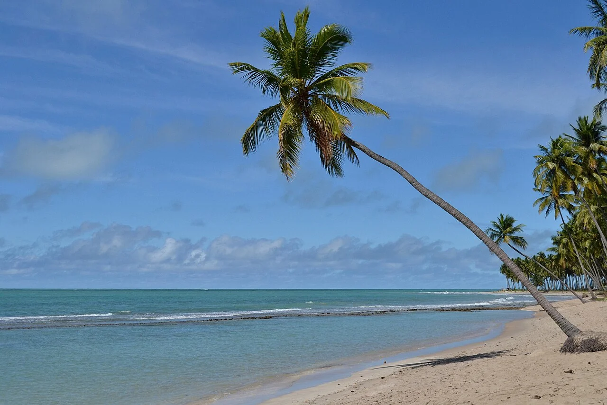

Praia dos Carneiros — Tamandaré
Tamandaré, Pernambuco, Brésil · baignade, snorkeling

Plage de sable clair et de hauts cocotiers à Tamandaré, à environ 113 km de Recife. Selon Wikipédia, l’eau y est calme et chaude presque toute l’année : l’embouchure du rio Formoso et une grande barrière de récifs forment des piscines naturelles à marée basse. La petite chapelle São Benedito est considérée comme la carte postale du lieu. Meilleure période de septembre à février, et octobre à décembre sont les mois les plus ensoleillés.
- Lieu
- Tamandaré, Pernambuco, Brésil
- Niveau
- Variable selon les conditions
- Activités
- baignade, snorkeling
- Type d'eau
- Mer / océan
- Coordonnées
- -8.70, -35.09 (position approximative du secteur)
Dangers à connaître
- Ne marche pas sur les récifs : tu abîmes la faune fragile.
- Par la terre, on passe par une propriété privée avec des restaurants à consommation minimale ; l’autre accès est le bateau, ou environ 7 km de marche sur le sable depuis Tamandaré.
- Les jours de pluie, le débit du fleuve augmente et l’eau de l’estuaire change de couleur et de température.
Le conseil d'Ocean Buddy
Vise la marée basse pour les piscines naturelles, emporte masque et tuba, et ne marche pas sur les récifs.
Ouvrir dans Ocean Buddy Télécharger sur l'App Store
Source : Fiche Ocean Buddy · décembre 2026 · d’après Wikipédia (portugais) et 360 Meridianos · à vérifier localement.